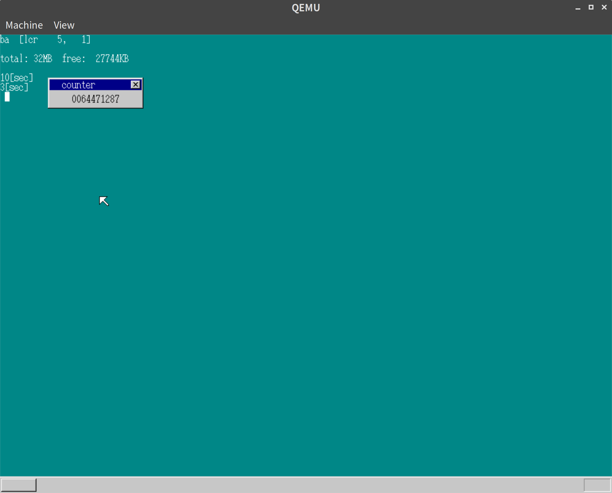
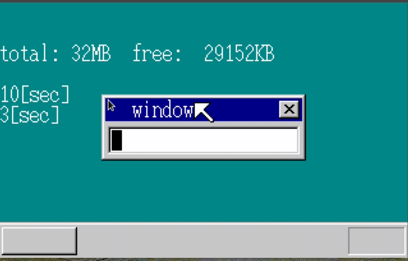
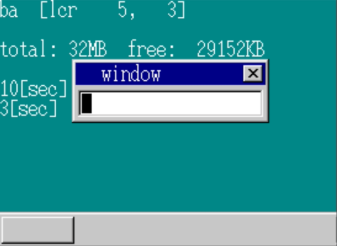

「30日でできる！OS自作入門」をRustで。14日目
Posted on July 1, 2019
「30日でできる！OS自作入門 」のC言語の部分をできるだけRustですすめてみる。今回は14日目の内容。
解像度の変更
画面を高解像度にする。アセンブリ言語での処理になるので、ほぼ本の通りすすめる。
; nasmhead.asm
; haribote-os boot asm
; TAB=4
VBEMODE EQU 0x105 ; 1024 x 768 x 8bitカラー
; （画面モード一覧）
; 0x100 : 640 x 400 x 8bitカラー
; 0x101 : 640 x 480 x 8bitカラー
; 0x103 : 800 x 600 x 8bitカラー
; 0x105 : 1024 x 768 x 8bitカラー
; 0x107 : 1280 x 1024 x 8bitカラー
; 省略...
; 画面モードを設定
; VBE存在確認
MOV AX,0x9000
MOV ES,AX
MOV DI,0
MOV AX,0x4f00
INT 0x10
CMP AX,0x004f
JNE scrn320
; VBEのバージョンチェック
MOV AX,[ES:DI+4]
CMP AX,0x0200
JB scrn320 ; if (AX < 0x0200) goto scrn320
; 画面モード情報を得る
MOV CX,VBEMODE
MOV AX,0x4f01
INT 0x10
CMP AX,0x004f
JNE scrn320
; 画面モード情報の確認
CMP BYTE [ES:DI+0x19],8
JNE scrn320
CMP BYTE [ES:DI+0x1b],4
JNE scrn320
MOV AX,[ES:DI+0x00]
AND AX,0x0080
JZ scrn320 ; モード属性のbit7が0だったのであきらめる
; 画面モードの切り替え
MOV BX,VBEMODE+0x4000
MOV AX,0x4f02
INT 0x10
MOV BYTE [VMODE],8 ; 画面モードをメモする（C言語が参照する）
MOV AX,[ES:DI+0x12]
MOV [SCRNX],AX
MOV AX,[ES:DI+0x14]
MOV [SCRNY],AX
MOV EAX,[ES:DI+0x28]
MOV [VRAM],EAX
JMP keystatus
scrn320:
; 既存の部分は320x200モードとして扱う
; 省略実行結果
以下の通り、高解像度で表示されることが確認できた。

できたものの、以降、一旦320x200にもどして(VBEMODE EQU 0x104として)すすめる。
キーボード入力の文字表示
現在キーボード入力は入力された値をそのまま表示するようになっている。
これを例えばAを打鍵したらAが表示されるようにする。
キーボードまわりの処理をまとめたkeyboard.rsを新たに作り、そちらにキーボード入力値と文字の対応をもつようにする。
// keyboard.rs
pub static KEYTABLE: [u8; 84] = [
0, 0, b'1', b'2', b'3', b'4', b'5', b'6', b'7', b'8', b'9', b'0', b'-', b'^', 0, 0, b'Q', b'W',
b'E', b'R', b'T', b'Y', b'U', b'I', b'O', b'P', b'@', b'[', 0, 0, b'A', b'S', b'D', b'F', b'G',
b'H', b'J', b'K', b'L', b';', b':', 0, 0, b']', b'Z', b'X', b'C', b'V', b'B', b'N', b'M', b',',
b'.', b'/', 0, b'*', 0, b' ', 0, 0, 0, 0, 0, 0, 0, 0, 0, 0, 0, 0, 0, b'7', b'8', b'9', b'-',
b'4', b'5', b'6', b'+', b'1', b'2', b'3', b'0', b'.',
];この配列を使って、画面に文字を表示するようにする
// lib.rs
#[no_mangle]
#[start]
pub extern "C" fn haribote_os() {
// 省略
// カーソル
let min_cursor_x = 8;
let max_cursor_x = 144;
let mut cursor_x = min_cursor_x;
let mut cursor_c = Color::White;
loop {
cli();
if FIFO_BUF.lock().status() != 0 {
let i = FIFO_BUF.lock().get().unwrap();
sti();
if KEYBOARD_OFFSET <= i && i <= 511 {
let key = i - KEYBOARD_OFFSET;
write_with_bg!(
sheet_manager,
shi_bg,
buf_bg_addr,
*SCREEN_WIDTH as isize,
*SCREEN_HEIGHT as isize,
0,
0,
Color::White,
Color::DarkCyan,
2,
"{:x}",
key
);
if key < KEYTABLE.len() as u32 {
// ウィンドウのテキスト領域内に表示
if KEYTABLE[key as usize] != 0 && cursor_x < max_cursor_x {
write_with_bg!(
sheet_manager,
shi_win,
buf_win_addr,
160,
52,
cursor_x,
28,
Color::Black,
Color::White,
1,
"{}",
KEYTABLE[key as usize] as char,
);
cursor_x += 8;
}
// バックスペースの場合は空白を表示してカーソルをもどす
if key == 0x0e && cursor_x > min_cursor_x {
write_with_bg!(
sheet_manager,
shi_win,
buf_win_addr,
160,
52,
cursor_x,
28,
Color::Black,
Color::White,
1,
" "
);
cursor_x -= 8;
}
boxfill(buf_win_addr, 160, cursor_c, cursor_x, 28, cursor_x + 8, 43);
sheet_manager.refresh(shi_win, cursor_x as i32, 28, cursor_x as i32 + 8, 44);
// 省略
// カーソル表示部分
} else {
if i != 0 {
TIMER_MANAGER.lock().init_timer(timer_index3, 0);
cursor_c = Color::Black;
} else {
TIMER_MANAGER.lock().init_timer(timer_index3, 1);
cursor_c = Color::White;
}
TIMER_MANAGER.lock().set_time(timer_index3, 50);
boxfill(buf_win_addr, 160, cursor_c, cursor_x, 28, cursor_x + 8, 43);
sheet_manager.refresh(shi_win, cursor_x as i32, 28, cursor_x as i32 + 8, 44)
}カウンター表示をなくしたので、stlhltでループをまわすのをやめている。
カウンターを表示していたウィンドウを使い、入力された文字を表示するようにした。
実行結果
以下のように文字の入力、削除ができるようになった。

ウィンドウの移動ができるようにする
マウス入力のハンドリング時に左クリックがおされていたらウィンドウが追従するようにする。
//lib.rs
#[no_mangle]
#[start]
pub extern "C" fn haribote_os() {
// 省略
} else if 512 <= i && i <= 767 {
// 省略
let (new_x, new_y) =
sheet_manager.get_new_point(shi_mouse, mouse_dec.x.get(), mouse_dec.y.get());
sheet_manager.slide(shi_mouse, new_x, new_y);
// 左クリックをおしていた場合
if (mouse_dec.btn.get() & 0x01) != 0 {
sheet_manager.slide(shi_win, new_x - 80, new_y - 8);
}
// 省略以前まではslide_by_diffという相対位置から絶対位置を計算して移動する関数を作っていたが、get_new_pointで絶対値の計算するように分割した。
実行結果
以下の通り、マウスの動きにあわせてウィンドウが動くことが確認できた。

14日目は以上となる。ここまでの内容のコードはyoshitsugu/hariboteos_in_rustのday14としてタグを打ってある。